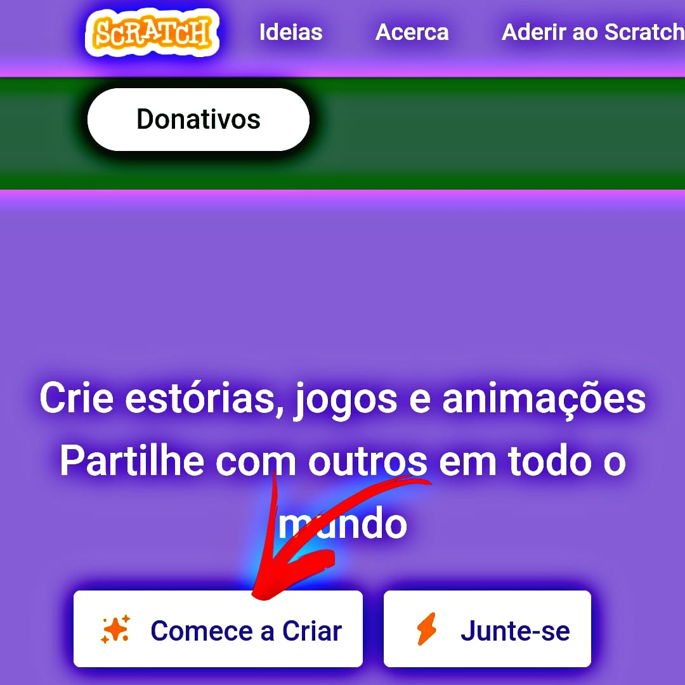
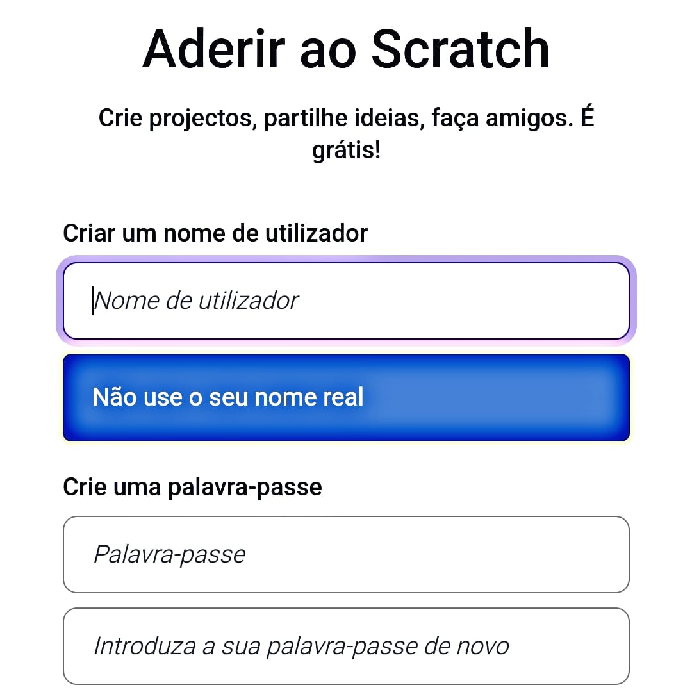
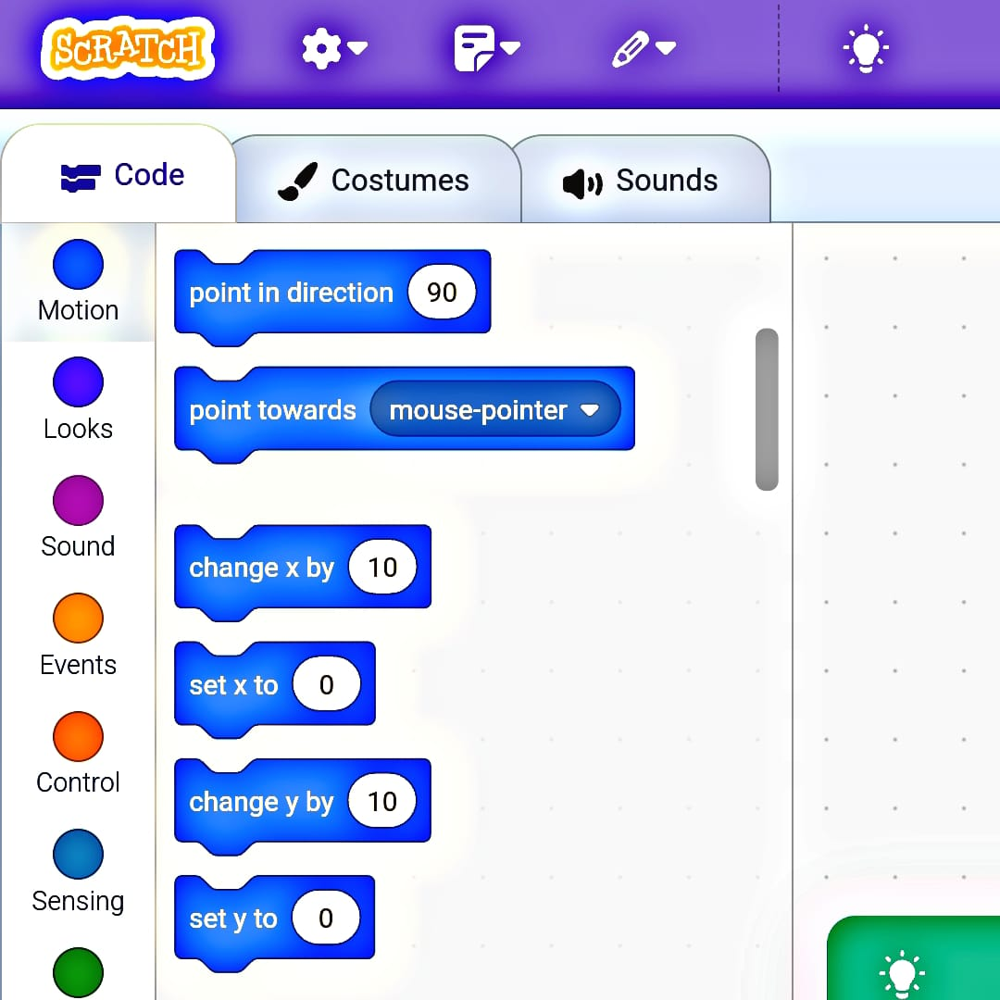

Coding Craft
Você sabe oque é Scratch?
Com o Scratch, é possível criar animações, jogos e histórias interativas, expressando paixões e interesses pessoais por meio da programação em blocos, você pode acessar o Scratch de forma online tendo acesso a sua comunidade ou de forma offline, fazendo seu download para o computador ou tablet. O Scratch é um projeto do Grupo Lifelong Kindergarten no MIT Media Lab, desenvolvido pela Scratch Foundation.
Criando seu primeiro Projeto
1. Acesse o site Scratch no seu navegador de preferencia e depois role a pagina para baixo ate encontrar a sessão comece a criar
2. Agora você deve escolher seu "nome" ficticío no Scratch, que por ser uma plataforma focada no publico infantil, preserva os dados reais do usuario, coloque também uma palavra chave para ajudar na procura do jogo por outros usuarios do site, e depois aperte em proximo.
3. Ao Entrar no Projeto, na primeira aba você deve arrastar blocos para criar o cenario, seu personagem, e como ele deve se comportar ao longo do jogo, sem a necessidade do usuario digitar longos codigos para desenvolver um jogo, se tornando uma forma ludica de conhecer a programação.
4. Já na segunda aba, como mostrado no video abaixo, você pode customizar e criar como serão os personagens do seu jogo, você pode ter quantos personagens quiser dos variados estilos.
Você pode saber mais sobre como customizar seu game com os blocos na documentação oficial do Scratch, feito pelos proprios criadores
SAIBA MAIS